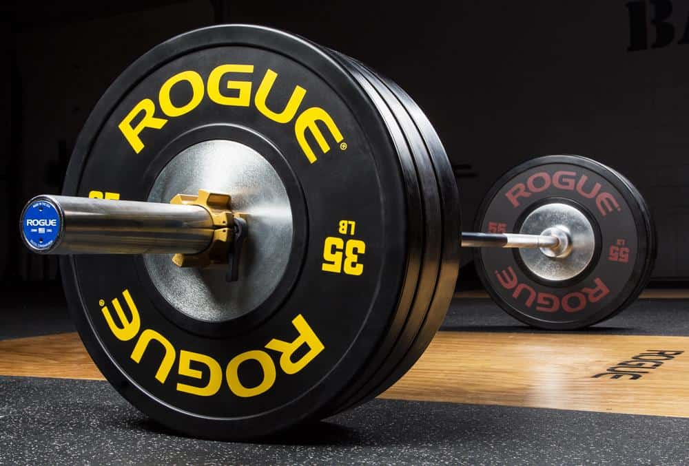

Kuntosali.
Olen harrastanut kuntosalilla k‰ynti‰ 17-vuotiaasta saakka, v‰liss‰ on kuitenkin ollut muutama lyhyempi tauko ja yksi pidempi 3-vuoden tauko. Nuorempana tietotaitoni ei ollut kaikkein paras tulosten saamiseen ja tiedon saaminen ei silloin ollut yht‰ helppoa kuin nyky‰‰n. Olen treenannut niin kehonrakennus tyylill‰ kuin voimanosto tyylill‰ jolla treenaan nyky‰‰nkin.
Joulukuussa tulee 3-vuotta siit‰ kun aloitin treenaamisen uudelleen kunnolla isolla vaihteella 4-5 kertaa viikossa. Viime vuonna minulle tuli yl‰kropan treenaamiseen 4kk tauko ranneleikkauksen takia ja se koko 4kk tuli treenattua jalkoja heti tikkien poiston j‰lkeen. Salitreeni toimii minulle terapiana kun tressi yritt‰‰ p‰‰st‰ voitolle. Se on myˆs helpottanut el‰m‰‰ni monien kokemieni vammojen kanssa mm: v‰lilevyn rappeuma.
